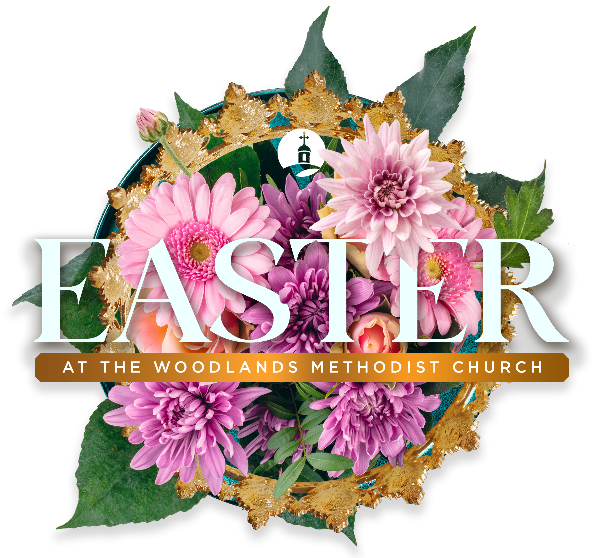

Welcome to The Woodlands Methodist Church! We are so glad you are interested in our dynamic and vibrant church. You will find a variety of worship styles on our campuses from traditional and contemporary to very modern.
Whether you're planning your first visit or looking to deepen your faith journey, we invite you to explore the many ways to get involved.
Jesus' call to "follow me" is an invitation to begin a lifelong journey to explore and apply God's Word, grow in maturity, love our neighbors, share our faith and, ultimately, become more like Him. G.R.O.W. Points is a pathway to intentionally connect and live out your faith at The Woodlands Methodist Church.